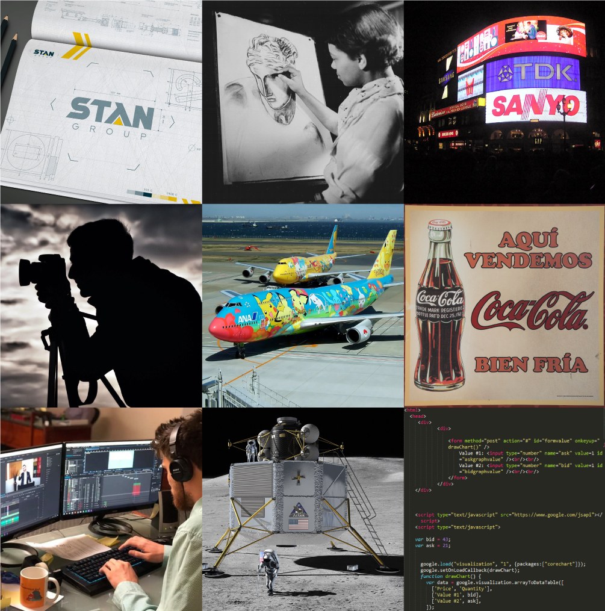

Graphic design is a profession, [2] academic discipline [3] [4] [5] and applied art whose activity consists in projecting visual communications intended to transmit specific messages to social groups, with specific objectives. [6] Graphic design is an interdisciplinary branch of design [1] and of the fine arts. Its practice involves creativity, innovation and lateral thinking using manual or digital tools, where it is usual to use text and graphics to communicate visually.
The role of the graphic designer in the communication process is that of encoder or interpreter of the message. They work on the interpretation, ordering, and presentation of visual messages. Usually, graphic design uses the aesthetics of typography and the compositional arrangement of the text, ornamentation, and imagery to convey ideas, feelings, and attitudes beyond what language alone expresses. The design work can be based on a customer's demand, a demand that ends up being established linguistically, either orally or in writing, that is, that graphic design transforms a linguistic message into a graphic manifestation. [7]
Graphic design has, as a field of application, different areas of knowledge focused on any visual communication system. For example, it can be applied in advertising strategies, or it can also be applied in the aviation world [8] or space exploration [9] [10] In this sense, in some countries graphic design is related as only associated with the production of sketches and drawings, this is incorrect, since visual communication is a small part of a huge range of types and classes where it can be applied.
With origins in Antiquity and the Middle Ages, [11] graphic design as applied art was initially linked to the boom of rise or printing in Europe in the 15th century and the growth of consumer culture in the Industrial Revolution. From there it emerged as a distinct profession in the West, closely associated with advertising in the 19th century [12] and its evolution allowed its consolidation in the 20th century. Given the rapid and massive growth in information exchange today, the demand for experienced designers is greater than ever, particularly because of the development of new technologies and the need to pay attention to human factors beyond the competence of the engineers who develop them. [13]
William Anderson Dwiggins is often credited with first using the term "graphic design" in a 1922 article, [14] although it appears in a 4 July 1908 issue (volume 9, number 27) of Organized Labor, a publication of the Labor Unions of San Francisco, in an article about technical education for printers: [15]
An Enterprising Trades Union … The admittedly high standard of intelligence which prevails among printers is an assurance that with the elemental principles of design at their finger ends many of them will grow in knowledge and develop into specialists in graphic design and decorating. …
A decade later, the 1917–1918 course catalog of the California School of Arts & Crafts advertised a course titled Graphic Design and Lettering, which replaced one called Advanced Design and Lettering. Both classes were taught by Frederick Meyer. [16]
Main Article: History of graphic design
In both its lengthy history and in the relatively recent explosion of visual communication in the 20th and 21st centuries, the distinction between advertising, art, graphic design and fine art has disappeared. They share many elements, theories, principles, practices, languages and sometimes the same benefactor or client. In advertising, the ultimate objective is the sale of goods and services. In graphic design, "the essence is to give order to information, form to ideas, expression, and feeling to artifacts that document the human experience." [17]